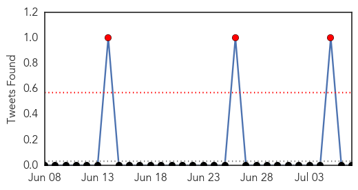

Dengue Fever
30-Day Web Trend
6 alerts, 8 warnings
30-Day Twitter Trend
3 alerts, 0 warnings

Article Locations

Article Confidences
Top Articles:
- 0.970
- At ground zero in Yangon’s dengue fever epidemic
- 0.933
- The Kathmandu Post
- 0.882
- International mosquito experts meet in Far North to beat dengue
- 0.859
- Viral Strains in Warm Countries, and How It Shifts
- 0.840
- Selangor up against too many setbacks - Nation
- 0.833
- Study explains how dengue virus adapts as it travels, increasing chances for outbreaks
- 0.822
- Contaminated Flood Water In Mumbai Claims Two Lives
- 0.795
- Leptospirosis disease kills 2 persons this month
- 0.738
- Leptospirosis disease kills 2 persons this month
- 0.724
- Aden's overwhelmed hospitals turn into hospices as bloodshed rages on
- 0.720
- 'The world is watching us slowly die': Hospitals turn into hospices in the Yemeni city of Aden
- 0.713
- Transgenic mosquito works to control dengue-carrying mosquitos
- 0.677
- Aden's overwhelmed hospitals turn into hospices
- 0.657
- Yemen: Aden's overwhelmed hospitals turn into hospices
- 0.599
- Aden’s overwhelmed hospitals turn into hospices
- 0.531
- Aden's overwhelmed hospitals turn into hospices
Top Tweets:
-
No tweets found for Jul 07, 2015
Cholera
30-Day Web Trend
0 alerts, 0 warnings

30-Day Twitter Trend
2 alerts, 0 warnings

Article Locations

Article Confidences

Top Articles:
- 1.000
- Cholera kills 32 in South Sudan
- 1.000
- The most from the coast
- 0.998
- Ministry of Health, WHO and partners score some victories in responding to cholera outbreak in South Sudan - South Sudan
- 0.994
- Cholera kills 32 in South Sudan, education key to stemming outbreak: UN
- 0.992
- 08.07.98 Cafes close over cholera fears
- 0.992
- Prestea Records 13 Cholera Cases, One Dead
- 0.992
- 8 die of cholera in northern Nigeria: official
- 0.992
- 8 die of cholera in northern Nigeria: official - Xinhua
- 0.988
- South Sudan cholera outbreak: 20 percent of deaths are in young children
- 0.987
- Cholera kills 32 in South Sudan, says UN
- 0.986
- 20 pct cholera deaths in South Sudan seen in children under five: UNICEF - Xinhua
- 0.983
- The most from the coast
- 0.941
- Cholera has killed 32 people in South Sudan
- 0.925
- Health centers not ready to battle cholera outbreak
- 0.875
- Children Make Up One Fifth Of Cholera Deaths In South Sudan: UNICEF
- 0.840
- S. Sudan Fighting Displaces Over 2 Million
- 0.550
- South Sudan UN Mission deplores killing of civilian in Organization compound
- 0.543
- Why Can’t We Stop Cholera In Haiti? « Berman Institute Bioethics Bulletin
- 0.533
- South Sudan: UN Mission deplores killing of civilian in Organization compound
Top Tweets:
-
No tweets found for Jul 07, 2015